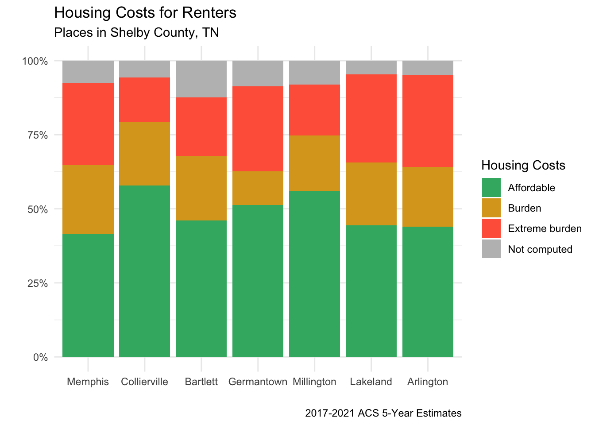

Capstone Draft
Health and Housing
Shelter is one of the three fundamental needs of human existence. No housing program can be sound unless the shelter it provides is healthful.
C.-E. A. Winslow, Dr.P.H., Chairman,
Allan A. Twichell, Technical Secretary,
Committee on the Hygiene of Housing (Mar., 1938)
History (1850s-1930s)
Dr. John H. Griscom stood before an audience in January 1852 and gave a lecture on the importance of clean air, a topic he believed “was not so much studied as it ought to be.” His words were summarized on the front page of the New-York Daily Times the next day, concluding with Dr. Griscom’s statement that “ventilation in houses should be attended to as one of the best means of preserving health.”1 The idea quickly spread—two and a half years later, an article describing the poor conditions of a building in Buffalo declared, “we intended to speak on the ventilation, but we are sick of the subject.”2
Over the next half century, large population influx into urban areas led to widespread development of tenement housing.3 These homes offered little in the way of space, sanitation, light, or fresh air, a fact made well-known by Jacob Riis’s 1890 book How the Other Half Lives. The conditions documented by Riis led New York City to adopt the first housing codes in the United States.
Housing reformers continued to demand better living conditions into the 20th century. Catherine Bauer’s landmark 1934 book Modern Housing stated that for a home to be “modern”, it must allow for cross-ventilation and sunlight; adequate privacy, space, and sanitary facilities; adjacent play space for children; and “finally it will be available at a price which citizens of average income or less can afford.”4 Modern housing, Bauer said, was constructed for “efficient use” rather than “quick profit”, and planned to retain quality for the long term, in “complete neighborhoods” with parks, schools, and other community facilities.
Inspired by post-war European housing programs, Bauer advocated for housing to be treated as a public utility and for the government to ensure comprehensively planned, decent, and stable housing for the working class, not just low-income households.5 She believed modern homes and neighborhoods were a means to an end, and could “never deteriorate into a slum, or a ‘blighted area’.”6
Bauer’s thesis contradicted the limited federal housing legislation that existed at the time. A post-Depression policy enacted under Hoover provided loans to corporations wholly focused on low-income housing and slum reconstruction.7 However, a lack of private investment led FDR to alter the program a year later into a public works initiative which directly funded construction of low cost housing and slum clearance projects.8 Outside of wartime efforts, this was the first instance of the US federal government constructing housing for its citizens.
Bauer was later a primary author on the National Housing Act of 1937, which officially established public housing in America and called for “the elimination of unsafe and insanitary housing conditions” and to remedy “the acute shortage of decent, safe, and sanitary dwellings for families of low-income, in rural or urban communities.”9
However, the Act was a compromise. Limits were placed on construction costs and tenant incomes, and an “equivalent elimination” clause required one unit of substandard housing be taken down for every unit of public housing built. This ensured the bulk of public housing projects would be in previous slum areas, and was meant to prevent public housing from competing with the private market.10
The bill’s co-sponsor, Senator Wagner, stated “the most important consideration is, that public housing projects should not be brought into competition with private industry… To reach those who are really entitled to public assistance, and to get into the field where private enterprise cannot operate, is the objective of this bill.”11 Still, the bill faced significant lobbying efforts that threatened its passage. The organizations that mobilized against the bill were the U.S. Chamber of Commerce, National Association of Real Estate Boards, the U.S. League of Building and Loans, and the National Retail Lumber Dealers Association.12
Healthy Homes
The 1937 Act led to the creation of the Committee on the Hygiene of Housing, appointed by the American Public Health Association. The following year, the committee published the Basic Principles of Healthful Housing in the American Journal of Public Health. The manual outlined 30 principles “believed to be fundamental minima required for the promotion of physical, mental, and social health,” whether the housing be high or low cost, urban or rural.13 The fundamental needs were divided into four categories: physiological needs (e.g. protection from elements), psychological needs (e.g. adequate privacy), protection against contagion (e.g. safe water supply), and protection against accidents (e.g. fire prevention).
Six decades after Healthful Housing was published, the manual found renewed relevance in 1999. Recognizing that “health, home construction, and home maintenance are inseparable because of their overlapping goals,” HUD and CDC joined together to launch the Healthy Homes Initiative.14 Most of the basic principles originally laid out in the 1938 manual were used to create the Healthy Home Rating System (HHRS).
The below table lists all 29 hazards of the modern HHRS, along with a short description and list of populations are most vulnerable to the each hazard.15
The HHRS established a standardized way for inspectors to identify and rate the risk of home health hazards. Once a hazard is identified, it is further assessed for severity and the effect it is having, or could have, on the occupants. The greater the risk or more serious the outcome, the higher the overall score. The system provides a way to compare risks associated with different types of hazards.
According to HUD16, this system lets local housing and health departments know which hazards are most serious to occupants, allowing them to prioritize funding. It also lets local policy makers identify which areas of the community are in greatest need and what health impacts those communities are facing.
Modern Research
There is a plethora of literature from the field of public health related to the impact of housing quality on residents. The more time a person spends indoors, the more exposed they are to biological, chemical, and physical agents that can affect their health and safety.17 Research and findings in the field can lead to national legislation to protect the public health. For instance, the effects of lead-based paint were found to be so severe that all lead-based paint was banned for residential use in 1978.18
Extensive research has been conducted on the relationship between asthma and housing quality. Asthma, a respiratory disease which causes episodes of wheezing, breathlessness, chest tightness, and coughing, has been linked to mold exposure and dampness.19 Additionally, the degree of household disrepair contributes to the amount of allergens carried by pests such as cockroaches.20
In recent years, increased attention has been directed at the connection between housing and mental health, particularly related to housing instability. For nine months, Tsai et al.21 monitored the health and housing status of 121 tenants who had appeared in eviction court. Persistent housing and mental health issues were present: 42% of tenants had appeared in eviction court before; 44% had previously been homeless; 39% screened positive for generalized anxiety disorder; 37% for post-traumatic stress disorder; 33% for major depressive disorder; and 17% reported suicidal ideation.
Maintenance in the Private Rental Market
Large structural damages can create major health risks, but repairs can be expensive and difficult to implement. Low-income renters can face added difficulty, as tenants have little or no power to repair such problems. A study of low-income parents of children with asthma found landlords were directly involved in keeping homes in poor condition, even when asked by the tenant to fix the property, and a cycle of fear, poverty, and lack of power compounded to make tenants hesitant to report problems.22 Relocating families can reduce health risks, but higher rents associated with safer housing can make it financially difficult or impossible for some families to move.23
Current regulation of private rental housing quality assumes that tenants will take action to report substandard housing, yet this is often not the case. To understand the disconnect between the law’s expectations and reality, Chisholm, Howden-Chapman, and Fougere24 collected existing qualitative literature to explore power dynamics in the landlord-tenant relationship. The research showed that, for the most part, tenants who “reported housing quality problems found it a stressful experience, with repairs taking a long time to be carried out, or not at all.” This experience often impacted future behavior, causing tenants to avoid reporting problems because they did not think it would be effective.
In some cases, tenants would rather move out than work towards a resolution, leaving the issue open for future tenants. In other instances, tenants with low incomes were aware of the lack of alternative housing, causing them to remain silent. Fear of eviction prevented tenants from reporting problems, and this fear was not unfounded; in three of the 15 studies, tenants who reported housing problems were evicted or forced to move. Though laws against retaliatory action might exist, no-cause evictions allow landlords to still remove the tenant from the unit. The authors conclude that tenants do not report housing quality problems because the regulation that relies on their reporting fails to protect many tenants.
Memphis Rental Housing
Intro
Memphis is located in the southwestern corner of Tennessee, on the bluffs of the Mississippi River. Memphis is within Shelby County, and the metro area includes seven other counties in Tennessee, Mississippi, and Arkansas.
This section uses data from the 2015-2019 5-year American Community Survey to understand the Memphis rental housing market. First, I will compare the number of renters in the Memphis MSA to other metro areas in the US, and explore where in Shelby County renters are located. Next, I will look into the demographics of renters in Memphis, focusing on race and cost burden. Finally, I will look into the characteristics of renter-occupied housing in Memphis, concluding with the most common household problems renters face, using data from the 2019 American Housing Survey for the Memphis MSA.
Renter-Occupied Households
There are two main ways to study the population of an area using Census data: individuals and households. In a place where all individuals live alone, the number of households and individuals would be identical. When multiple people live together in the same housing unit, they are counted as one household. Additionally, the Census counts individuals who live in group quarters, like nursing homes, adult correctional facilities, and military quarters, separate from renter- and owner-occupied households.
Typically when we think of population, we are referring to the number of individuals in a place. However, this paper seeks to understand the characteristics of renters. For this topic, a wider range of Census data is available when we narrow our scope to households. There are certain limitations—demographic data is limited to the head of the household, and if multiple individuals under the same household have different characteristics, some data will be omitted. Still, the data allows a general understanding of an area’s population. As such, any mentions of “renters” in the below sections refers to renter-occupied households, rather than individual renters.
Renter Locations
Where do renters live? The first half of this section compares the percentage of renters in the Memphis MSA with other large metro areas in the US. The second portion focuses on Shelby County, and breaks down which places and census tracts contain the highest percentage of renters.
US Metro Areas
Before studying renters in Memphis, it’s useful to know how the area compares to other metro areas in the US. A metro area (also called a metropolitan statistical area, or MSA) is a geographic boundary created by the US Census. It contains a county with an urban core, and surrounding counties with “a high degree of social and economic integration” (measured by commute to work).25 Any mention of “Memphis” in this section refers to the Memphis MSA, which includes eight counties spanning Tennessee, Mississippi, and Arkansas.
The table below lists the top 50 metros in the US (by number of households), sorted by the percentage of renters.
Memphis ranks 43rd in the US for the total number of households in a metro area. However, Memphis has the 10th highest percentage of renters in a metro, with 40% of all households renting. Comparatively, Nashville ranks 36th for total number of households, and 35th for the percentage of renters. Memphis has the largest difference between these ranks for the top 10 metros with the highest rent percentage. Thus we can conclude Memphis has an above average percentage of renters compared to other metros in the US.
Places in Shelby County
While 40% of households in the Memphis MSA are renters, this percentage varies when we subdivide the metro area. In general, there are more rental units in a central city/county compared to neighboring areas. This section will focus on Shelby County, and any mention of “Memphis” refers exclusively to the city of Memphis.
The following table shows the percentage of renters for places in Shelby County.
Though the overall MSA is majority owner-occupied, the city of Memphis is mostly renters, with 53% of all households renting. While this paper does not include a time-series analysis, it’s worth mentioning that only within the past decade has Memphis shifted from being majority owner- to majority renter-occupied. For reference, the 2007-2011 5-year ACS reported that Memphis households were 53% owner, 47% renter. This means there was a 6 percentage point increase in rentership over an 8 year period.
The next highest percentage of renters is in Millington, which is home to a Naval base, drawing in residents who are often only temporarily stationed (and thus more likely to rent). Just over a third of households in unincorporated Shelby County are renters. Of larger suburbs with more than 10,000 residents, Collierville has the most renters, and the town’s rent percentage is more than 6 points higher than Bartlett or Germantown.
Lakeland has the smallest percentage of renting households in the county. However, this percentage is likely to change in the coming years, with developments in Lakeland that will bring more than 800 multifamily units. In response to the massive influx, Lakeland passed an 18-month moratorium on standalone apartment buildings in October 2019 to give the city “a little bit of breathing room” and allow development of the city’s schools and infrastructure.26 Under pressure from residents, the moratorium was extended in October 2020 for another two years and expanded to include all new apartment development, including mixed-use projects. In response to citizen concerns, the mayor stated, “There’s just no taste in Lakeland for apartments right now.”27
Germantown has also sought to limit new multifamily housing. The city first initiated an 18-month moratorium on all apartment development in January 2018, followed by a shorter moratorium on standalone, single-use multifamily complexes. In January 2020, the city’s aldermen voted to ban these complexes altogether by amending zoning ordinances. Apartments and condos are still allowed in certain areas of the city if they are part of mixed-use developments.28
Meanwhile, Collierville has been home to Schilling Farms, “the premier mixed-use development in West Tennessee and the Mid-South region,” since the early 1990s. The site contains 1,180 apartments and the town recently voted to expand and include another 259 rental units.29
The map below shows the percentage of renters in Shelby County census tracts. The map is interactive, and the layers button to the left can be used to change the map background (ESRI.WorldImagery offers a satellite view).
Percent of Renters in Shelby County Census Tracts
Tracts with the highest percentage of renters are mostly located near the downtown core of Memphis. There are exceptions, notably in Millington and in the southeastern corner of Memphis, near Germantown. The areas with the lowest percentage of renters are in the northeastern portion of Shelby County and in parts of Germantown and Collierville.
Renter Demographics
This section will explore characteristics of renting households in Memphis. First I look at the race/ethnicity of renters and where certain racial/ethnic groups are more likely to live. Included in this section is an analysis of mortgage discrimination in Memphis, to explain some of the large disparities in homeownership. Then I breakdown how much households spend on housing, and address the amount of government assistance available to renters.
Race/Ethnicity
Are certain racial/ethnic groups more likely to be renters than others? The table below shows how much certain racial/ethnic groups are present in the total population, compared to how much they are present in the renter population. In a place with no disparity in tenure, we would expect these percentages to be equal (i.e., if Black households make up 60% of all households, they would also comprise 60% of all renters). The last column shows the percentage point difference for each group.
According to the above table, Black households make up 62% of all households in Memphis, yet around 71% of renting households, a difference of 9 percentage points. Hispanic/Latino households are also slightly more likely to rent compared to their representation in the total number of households. Meanwhile, Asian households are slightly less likely to rent compared to their overall representation. The largest disparity is in White households; though they make up about 31% of all households in Memphis, they only account for 20% of all renters, a difference of 10 percentage points.
In summary, there is a significant disparity in tenure of White and Black households compared to their total representation in households. White households are significantly less likely to rent, while black householders are significantly more likely to rent. Hispanic/Latino households are also more likely to rent, and Asian households less likely to rent, but the disparity is much smaller.
The following map shows, for each census tract in Shelby County, what percentage of renters are represented by each racial/ethnic group.
Race/Ethnicity of Renters in Shelby County Census Tracts

The map shows distinct divisions of where certain racial/ethnic groups rent. White renters make up a majority along the Poplar corridor and in areas outside the city limits. Meanwhile, Black renters make up the majority of renting households in North and South Memphis, and in unincorporated parts of the county to the east and along the Mississippi River. Hispanic/Latino renters are most represented in and near the Berclair neighborhood (within the I-240 loop, north of Summer Avenue and west of Highland Street). Asian renters are predominantly outside the city of Memphis, in the suburbs of Germantown, Collierville, and Bartlett.
Mortgage Discrimination
There are many reasons why a household may rent instead of own, but mortgage discrimination is certainly a contributor to the large racial disparity in homeownership. Memphis has been subject to historical and recent mortgage discrimination.
When the federal government began insuring home loans in the 1930s, they commissioned color-coded maps that rated the mortgage risk of neighborhoods in every major metro area in America. The manuals used by assessors prioritized newly built suburban neighborhoods and encouraged segregation, calling for lower ratings in neighborhoods with “inharmonious racial groups.”30
Black neighborhoods were also rated high-risk, even if the neighborhood was solidly middle class with single-family homes. High-risk neighborhoods were shaded red, leading to the term “redlining,” and the federal government either denied these loans or charged higher rates to account for the “risk.”31 The practice of redlining denied homeownership and intergenerational wealth building to non-White families.32

Overall, 69% of the city was deemed “hazardous” (red) or “definitely declining” (yellow), notably including all of Downtown and the majority of North and South Memphis. Only 7% of the city received an A rating (“best”, green), including the Central Gardens neighborhood, areas adjacent to Overton Park, Chickasaw Gardens, and East Memphis neighborhoods adjacent to golf courses. The remaining 24% of the city (“still desirable”, blue) contains other Midtown neighborhoods and follows the Poplar Avenue corridor to the east.33
Unfortunately, mortgage discrimination has continued into the 21st century. In recent years, at least three major lawsuits have been settled by banks accused of discriminatory lending in Memphis,34 and another case was recently opened.
Excessive foreclosures following the Great Recession led Memphis and Shelby County to file suit against Wells Fargo for targeting Black neighborhoods for predatory lending practices, which the bank settled for $425 million in 2012.35 After the mortgage crisis, banks became selective of whom they targeted and approved for mortgages, often at the expensive of non-white residents. In 2016, BancorpSouth and First Tennessee Bank settled separate suits for $10.6 million and $1.9 million, respectively, against accusations of disproportionately denying loan applications to non-white borrowers and failing to build branches in non-white neighborhoods.36
In October 2021, the Consumer Financial Protection Bureau and Department of Justice filed suit against Trustmark Bank for allegedly discriminating “against Black and Hispanic neighborhoods by deliberately not marketing, offering, or originating home loans to consumers in majority-Black and Hispanic neighborhoods in the Memphis metropolitan area.” They also allege the bank “discouraged consumers residing in or seeking credit for properties located in these neighborhoods from applying for credit.” The allegations are all in regards to recent behavior, from 2014 to 2018.37
Cost Burden
Do renters pay more of their income to housing than owners? The more a household pays towards housing, the less they will have for other needs, and the less they will be able to put towards savings. If renters want to own yet pay most of their income towards rent, they will have a harder time saving the money necessary for a down payment. Additionally, households that are already cost burdened will have difficulty finding new housing if housing costs are increasing.
In this section I use “cost burden” as a general term to mean “housing costs as a percentage of household income in the past 12 months.” The following graphs exclude households who have zero/negative income or who do not pay rent. For this reason, percentages mentioned may not total 100%.
All Households
The federal government determines affordable housing to be no more than 30% of a person’s income. Someone paying over 30% is considered cost burdened; more than 50% is extremely cost burdened. These measures are not perfect—smaller income households may find 30% is still stressful, while larger income households can pay over 30% and still be well off.
The graph below shows housing cost burden for households in Memphis, separated by tenure.

Overall, the majority of households in Memphis have affordable housing, with 62% paying less than 30% of their income towards housing, compared to 35% who are cost burdened. However, separating households by tenure reveals that the majority of households with affordable housing are owner-occupied units. In fact, more renters are cost burdened than have affordable housing. Comparatively, very few homeowners are cost burdened.
As mentioned above, households with higher incomes can afford to pay more of their income towards housing; while they may be literally cost burdened, they can still easily meet their other needs. The figure below divides the above graph in three income brackets.

As shown above, households earning less than $35,000 are mostly renters, and the vast majority of these renters are cost burdened. While there are also many owner-occupied households earning less than $35,000, their housing costs are more often affordable.
Households in the middle income range are much more likely to have affordable housing. There are nearly an identical number of owners and renters with affordable units. Slightly more renters are cost burdened, but the difference is very small compared to low-income earners.
Nearly all housing is affordable for households earning more than $75,000, no matter the tenure. For the few households who are cost burdened, they are likely still financially secure. At this income range, households are much more likely to own than to rent.
Renters
Next, let’s take a deeper look into housing costs paid by renters. Recall that households who pay more than 50% of their income in rent are considered extremely cost burdened. These households are shown in the graph below.

Just over 40% of renting households in Memphis have affordable housing, while the majority, 51%, are cost burdened in some way. When we break down cost burden, we see there are more renters who are extremely cost burdened than those who face a moderate burden.
As before, let’s separate our graph by income. This time I will take a more detailed look at income groups.

Below $20,000, the vast majority of renters face extreme cost burden and there are very few with affordable housing. The largest percentage of renters in Memphis earn between $20,000 to $34,999, and nearly all of these renters are still cost burdened, though most no longer face extreme burden. Only above $35,000 are a majority of renters affordably housed, with a very small rate of extreme burden. Above $50,000, the vast majority of renters have affordable housing and cost burden is infrequent, and it is practically nonexistent above $75,000. However, there are few renters at this income range compared to lower income ranges.
In order to be affordably housed, a household earning $35,000 should pay no more than $875 per month. Half, 50%, of renting households in Memphis earn below $35,000. This graph suggests there is a large shortage of rental homes below this price.
Race
A recent Zillow research report discussed where rent burden is most unequal in major metro areas across the US.38 The data used combines ACS rent and income data, migration data, and Zillow rent data to estimate cost burden for renters by race. The research is useful because it offers a more up-to-date analysis of cost burden than is currently available from the Census.
Note that while my analysis in this section has focused on the city of Memphis, this graph is for the Memphis metro area.

The above graph shows consistent disparities in rent affordability between Black and White households in the Memphis MSA. The latest data from August 2021 shows the average Black renter is cost burdened, paying 32.1% of their income towards rent, while the average White renter is affordably housed, paying 24.2% towards rent. Affordability for White renters has remained constant since around January 2019, hovering around 24%. Over the same period, cost burden for Black renters has worsened from 30.3% to 32.1%.
Government Assistance
In the face of such high rates of rent burden, some may wonder how much the government is assisting with housing costs. The Memphis Housing Authority (MHA) is the local agency that manages public housing and housing vouchers. According to the agency’s annual plan, the MHA manages 2,565 public housing units and provides 8,031 vouchers, for a total of 10,596 government-supported units. Due to funding limits, the MHA is not able to fully meet the housing needs of residents in the city. MHA’s public housing and HCV programs each have waiting lists, yet even the waiting lists are closed. The HCV waiting list was last opened in 2017 and currently has over 15,000 people on the list.39
Housing Characteristics
This final section looks into certain qualities of rental housing in Memphis. First I will look into the type of housing renters live in and the year the structures were built. Then I will use data from the American Housing survey to identify common housing quality problems that renters experience.
Units in Structure
Typically apartment complexes are associated with renter-occupied housing, but how true is this for Memphis? The graph below divides housing structures into four categories: single-family; duplex, triplex, and quadplexes, which often resemble single-family homes; larger multifamily structures with five or more units; and alternative housing like mobile homes, boats, vans, etc.
The largest proportion of renters, 43%, live in single-family homes. While the majority of renters live in multifamily units, 16% are in duplexes-quadplexes, and 40% are in larger multifamily structures with five or more units. Less than 1% of renters live in a mobile home, RV, boat, van, or some other form of housing.
Year Structure Built
How old are the units in which renters live? Older structures are more likely to need maintenance, and they can be susceptible to health risks that are not in newer homes. For instance, the ban on lead based paint was not passed until 1979, and homes built before the ban are likely to have lead paint unless they have been remediated.
Most renters live in older housing structures. Overall, 62% of renter-occupied housing was built before 1980 (and thus are at risk for lead paint problems). Only 3% of renter-occupied housing was built within the past decade, indicative of the construction shortage after the Great Recession. Overall, the median year built for occupied rental units is 1974, 47 years ago, and unless these homes have been properly maintained they are at risk of housing quality problems.
Housing Quality Problems
Every five years, the American Housing Survey (AHS) provides data on housing quality problems in the Memphis MSA. The most recent survey was completed in 2019. Note that while most of the analysis on this page is specifically for Memphis, the AHS surveys the entire metro region.
According to the AHS, 93.53% of renters in the Memphis MSA had adequate housing, while 6.47% had moderately or severely inadequate housing. The table below shows the most common problems renters experience. Rows marked with an asterisk (*) are related to exterior problems; the AHS only collects this data for single-family structures.
| Characteristic | Estimate | Percentage |
|---|---|---|
| Signs of cockroaches in last 12 months | 50,900 | 22.72% |
| Signs of mice or rats inside home in last 12 months | 24,400 | 10.89% |
| Water leakage from inside structure in last 12 months | 19,500 | 8.71% |
| Water leakage from outside structure in last 12 months | 18,900 | 8.44% |
| Uncomfortably cold for 24 hours or more last winter (occupying the same home, with heating equipment) | 12,300 | 6.61% |
| Broken windows* | 7,600* | 6.46%* |
| Open cracks or holes (interior) | 14,400 | 6.43% |
| With fuse or breaker blown in last 3 months | 14,100 | 6.30% |
| Missing roofing material* | 7,000* | 5.95%* |
| Mold in last 12 months | 11,800 | 5.27% |
| Hole in roof* | 4,200* | 3.57%* |
| Missing bricks, siding, or other outside wall material* | 3,900* | 3.32%* |
| With no toilet working some time in last 3 months | 7,000 | 3.13% |
| Rooms without electric outlets | 6,600 | 2.95% |
| With water stoppage in last 3 months | 6,400 | 2.86% |
| Broken plaster or peeling paint (interior) | 5,300 | 2.37% |
| Sewage breakdown in last 3 months | 5,100 | 2.34% |
| Exposed wiring | 3,900 | 1.74% |
The AHS reports that pests are the most common problem renters experience: 23% reported recently spotting signs of cockroaches, and 11% for mice or rats. Water leakage problems affected 8-9% of renters, likely contributing to the 5% who reported mold. Many homes are not properly sealed, with 6% of renters reporting broken windows and open cracks or holes. This can contribute to pest problems and residents being uncomfortably cold in their homes.
If the percentage of renters experiencing a problem seems small compared to the overall number of renters, it’s useful to look at the estimates. For instance, the number of renter-occupied units who have seen signs of mice or rats within the past year is larger than the total number of households in any one of Memphis’s incorporated suburbs in Shelby County. The number of renters who have recently experienced mold is roughly equal to the total number of households in Millington, Arlington, and Lakeland, combined.
References
Footnotes
Soifer et al., Community Economic Development in Social Work, 7.↩︎
Goetz, New Deal Ruins, 23; Radford, Modern Housing for America, 76, 183.↩︎
“National Industrial Recovery Act of 1933”; Goetz, New Deal Ruins, 26.↩︎
“National Housing Act of 1937”; McCarty, Perl, and Jones, “Overview of Federal Housing Assistance Programs and Policy”.↩︎
Goetz, New Deal Ruins, 27–28; Radford, Modern Housing for America, 188–89.↩︎
Goetz, New Deal Ruins, 28; Mitchell, Friedman, and Rutgers University, Federal Housing Policy and Programs.↩︎
APHA and Committee on the Hygiene of Housing, “Basic Principles of Healthful Housing”.↩︎
Mendell et al., “Respiratory and Allergic Health Effects of Dampness, Mold, and Dampness-Related Agents”.↩︎
Rauh, Chew, and Garfinkel, “Deteriorated Housing Contributes to High Cockroach Allergen Levels in Inner-City Households.”↩︎
“Longitudinal Study of the Housing and Mental Health Outcomes of Tenants Appearing in Eviction Court”.↩︎
Grineski and Hernández, “Landlords, Fear, and Children’s Respiratory Health”.↩︎
McLaine et al., “A Coordinated Relocation Strategy for Enhancing Case Management of Lead Poisoned Children”.↩︎
Waddell, “Lakeland Approves 18-Month Moratorium on Standalone Multifamily Housing”.↩︎
Waddell, “Lakeland Approves New Moratorium on Apartments”.↩︎
Warren, “Germantown Votes to Eliminate Future Standalone Single-Use Multifamily Complexes”.↩︎
Warren, “First Phase of Water Tower District at Schilling Farms Receives Final Approval”.↩︎
Federal Housing Administration, “Underwriting Manual,” secs. 935, 937, 951, 982.↩︎
Bradley, “Seeing Red I”; Uhlmann, “The State of Evictions in Memphis, Tennessee”.↩︎
Rothacker, “Wells Fargo Spending $432 Million to End Lending Suit”.↩︎
Lane, “BancorpSouth Fined $10.6 Million for Discriminatory Lending, Redlining”; Lane, “First Tennessee Bank Reaches $1.9 Million Settlement over Discriminatory Lending”.↩︎
CFPB, “CFPB, DOJ and OCC Take Action Against Trustmark National Bank for Deliberate Discrimination Against Black and Hispanic Families”.↩︎
Zillow Research, “Where the Rent Burden Is Most Unequal Across Racial Communities”.↩︎
Citation
@online{johnson,
author = {Sarah Johnson},
title = {Capstone {Draft}},
url = {https://sarahjohnson.io/220224-draft.html},
langid = {en}
}